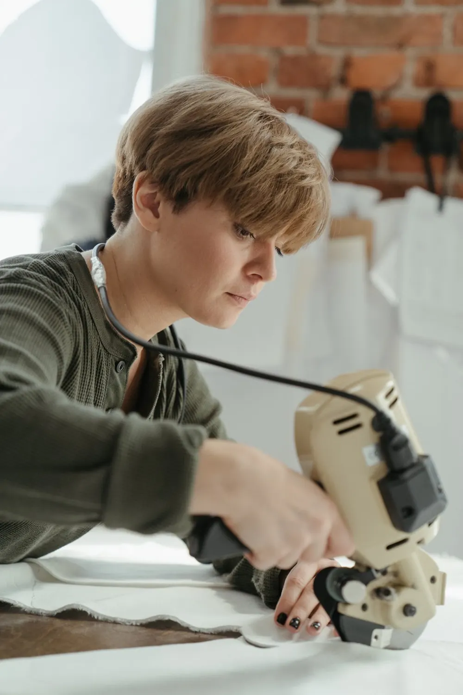

Eight stages. One continuous thread.
From the first cone of yarn to the final carton, each step is planned and checked – so samples match bulk and deliveries stay on time.

Yarn & Preparation
Yarn is selected, wound and set up on creels so every thread runs even and clean.

Weaving & Knitting
Power looms and knitting machines turn yarn into fabric in the required width and weave.

Handcraft Detailing
Hand weaving, embroidery and block printing add the details that machines can't.

Dyeing & Colour Lab
Shades are matched and tested in the lab before they reach bulk production.

Cutting
Patterns are laid out and fabric is cut precisely to reduce waste.

Stitching & Finishing
Trained teams stitch, finish and press garments line by line.

Quality Inspection
Fabric and garments are checked by hand for flaws, measurements and finish.

Packing & Dispatch
Orders are folded, labelled, cartoned and dispatched on your timeline.
Have a design or sample in mind? We'll suggest fabric, process and timeline.